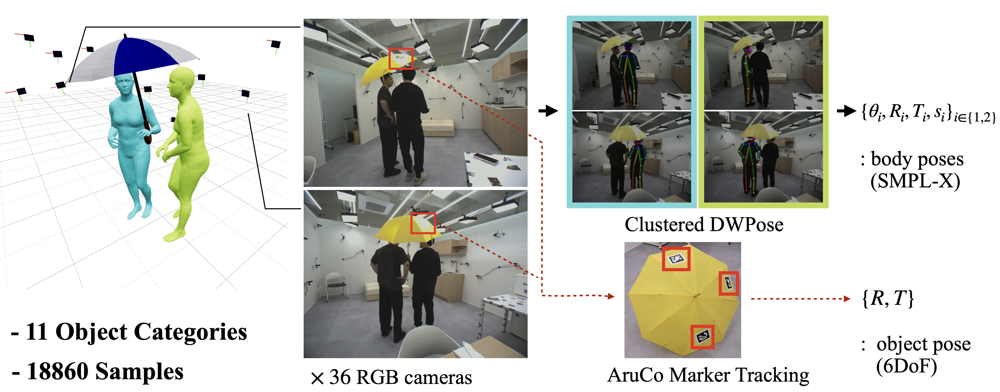

The way humans interact with each other, including interpersonal distances, spatial configuration, and motion, varies significantly across different situations. To enable machines to understand such complex, context-dependent behaviors, it is essential to model multiple people in relation to the surrounding scene context. In this paper, we present a novel research problem to model the correlations between two people engaged in a shared interaction involving an object. We refer to this formulation as Human-Human-Object Interactions (HHOIs). To overcome the lack of dedicated datasets for HHOIs, we present a newly captured HHOIs dataset and a method to synthesize HHOI data by leveraging image generative models. As an intermediary, we obtain individual human-object interaction (HOIs) and human-human interaction (HHIs) from the HHOIs, and with these data, we train an text-to-HOI and text-to-HHI model using score-based diffusion model. Finally, we present a unified generative framework that integrates the two individual model, capable of synthesizing complete HHOIs in a single advanced sampling process. Our method extends HHOI generation to multi-human settings, enabling interactions involving more than two individuals. Experimental results show that our method generates realistic HHOIs conditioned on textual descriptions, outperforming previous approaches that focus only on single-human HOIs. Furthermore, we introduce multi-human motion generation involving objects as an application of our framework.


@inproceedings{hhoi,
title={Learning to Generate Human-Human-Object Interactions from Textual Descriptions},
author={Na, Jeonghyeon and Baik, Sangwon and Lee, Inhee and Lee, Junyoung and Joo, Hanbyul},
booktitle={NeurIPS},
year={2025}
}